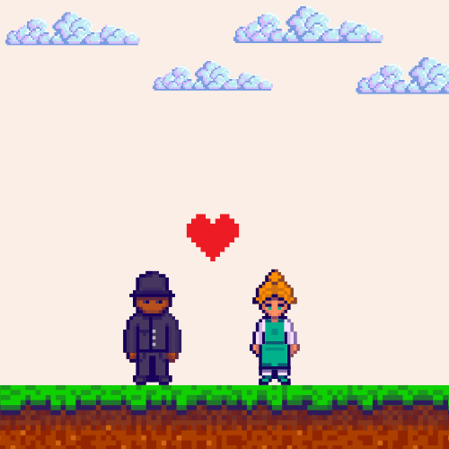
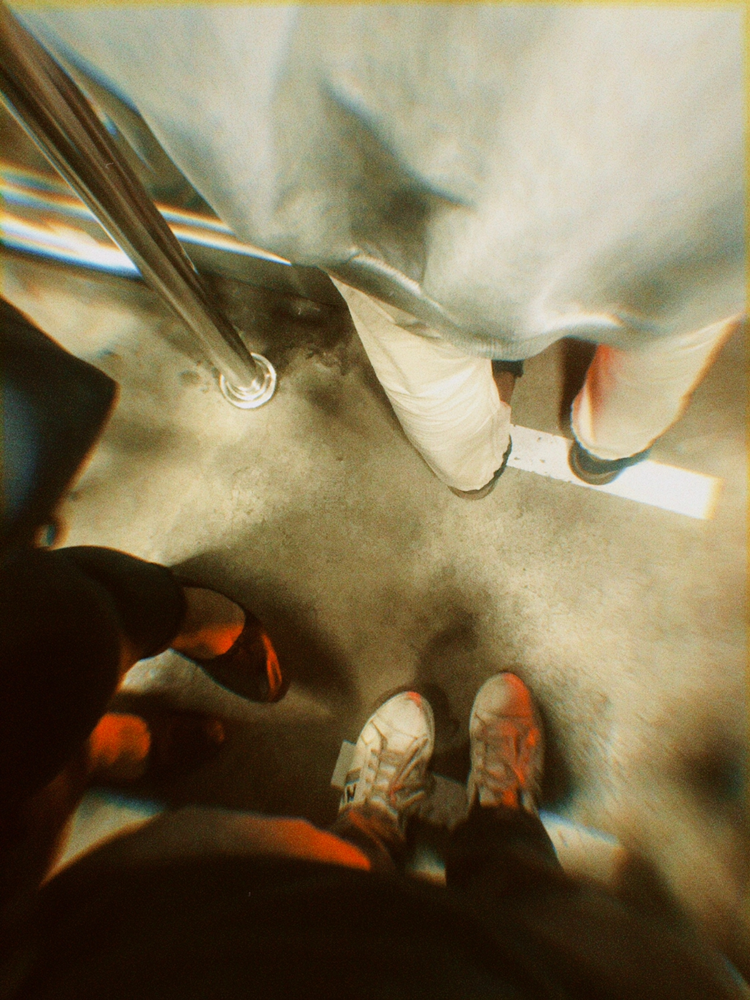
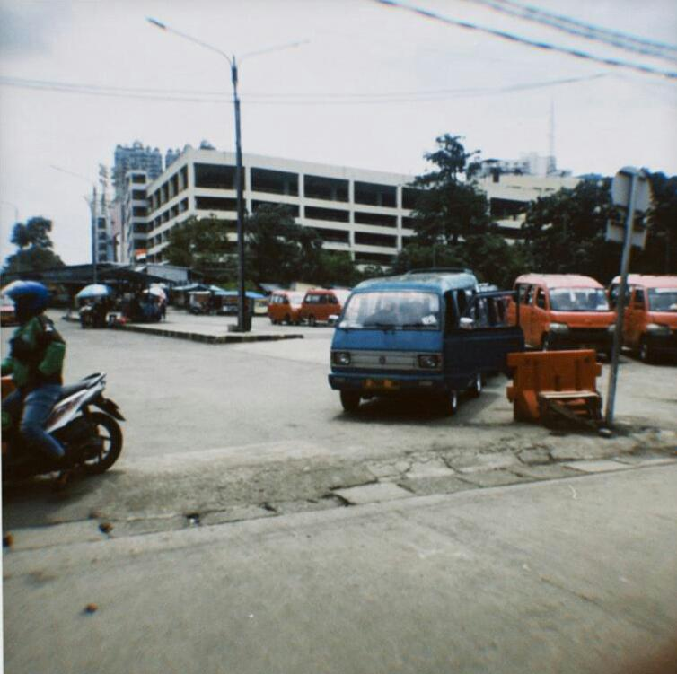

.jpeg)
.jpeg)
halo
nama ku dwipebrianto. aku lahir dan besar dijakarta tapi orang tua ku dari jogja dan jawa tengah. maka dari itu aku sering dipanggil maspeb ya, selamat datang di tentang ku dan selamat menikmati cerita ini
kisah ku?
hmm.. mari kita cerita sedari ku kecil hingga dewasa.
kita mulai dari kecil, aku tumbuh di kampung kecil di semaraknya ibu kota, masa kecil yang cukup menyenangkan
walau tidak selalu menyenangkan sih. tapi banyak pelajaran yang ku ambil salah satunya aku senang sekali menemukan hal baru sedari kecil aku sudah bercita cita menjadi arkeolog atau sejarahwan
aku sudah tumbuh dewasa dengan seribu pertanyaan.
ini bagaimana yah? itu bagaimana yah? terus kok ini bisa gini? akhirnya aku mulai mencari jawaban itu. semakin beranjak dewasa semakin kepo aku dengan semua hal
hingga aku menemukan internet saat aku di sekolah menengah pertama, hal indah apa ini kenapa sekarang pulsa seperti tidak berguna lagi semenjak hari itu aku kepo dengan internet dan mencoba mempelajarinya
setelah pencarian semuanya aku sadar kalau internet itu ternyata tidak semudah yang dikira orang, data data yang tak masuk akal benar tak masuk akal di kepala ku. entah bagaimana haha, namun akhirnya aku menemukan keahilan ku di internet karena aku suka sekali foto dan desain jadi aku belajar mereka semua, tentu saja dengan bantuan internet tanpa aku sadari aku telah belajar jauh hingga menuju desain website, dan ini lah sekarang aku. btw kalau suka ini mungkin kamu juga suka web portofolio aku. lihat disini yah